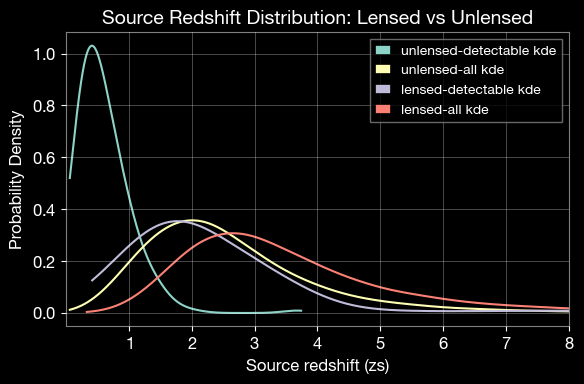

LeR Short Example
This notebook is created by Phurailatpam Hemantakumar
ler is a comprehensive framework for simulating gravitational wave (GW) events and calculating their detection rates, including gravitational lensing effects. - The ``LeR`` class is the primary interface for these simulations. - The ``GWRATES`` class focuses on standard (unlensed) Compact Binary Coalescence (CBC) events. Refer to the GWRATES complete example for more details.
This notebook demonstrates how to simulate both lensed and unlensed CBC populations and compare their detection rates using the LeR class.
Table of Contents
LeR initialization with default arguments
Basic GW Event Simulation and Rate Calculation
2.1 Simulate Unlensed GW Population
2.2 Calculate Unlensed Detection Rates
2.3 Inspect Generated Unlensed Parameters
Lensed GW Population Simulation and Rates
3.1 Simulate Lensed GW Population
3.2 Calculate Lensed Detection Rates
3.3 Inspect Generated Lensed Parameters
Rate Comparison and Visualization
4.1 Compare Lensed vs Unlensed Rates
4.2 Access Saved Data Files
4.3 Load and Examine Saved Parameters
4.4 Visualize Parameter Distributions
Available Internal Functions and Their Usage
5.1 Explore Functions and Parameters
5.2 Short Example on Using Internal Functions
Summary
1. LeR initialization with default arguments
The LeR class is the main interface for simulating unlensed and lensed GW events and calculating detection rates. By default, it uses:
Event type: BBH (Binary Black Hole).
Lens galaxy model: EPL+Shear (Elliptical Power Law galaxy with external shears).
Detectors: H1, L1, V1 (LIGO Hanford, LIGO Livingston, Virgo) with O4 design sensitivity.
etc.
All outputs will be saved in the ./ler_data directory by default.
[ ]:
# Import LeR
from ler import LeR
# Initialize LeR with default settings
# use this gwsnr's input args if you want SNR values in the output, besides the boolean detection probability values. This will increase the output dictionary size and the runtime of the code. For details, refer to https://gwsnr.hemantaph.com/examples/pdet_generation.html.
# pdet_kwargs=dict(snr_th=10.0, snr_th_net=10.0, pdet_type="boolean", distribution_type="noncentral_chi2", include_optimal_snr=True, include_observed_snr=True)
ler = LeR(npool=6)
# if Cross section interpolation data points are newly created, time: 5m (npool=6)
Initializing LeR class...
Initializing LensGalaxyParameterDistribution class...
Initializing OpticalDepth class
comoving_distance interpolator will be loaded from ./interpolator_json/comoving_distance/comoving_distance_0.json
angular_diameter_distance interpolator will be loaded from ./interpolator_json/angular_diameter_distance/angular_diameter_distance_0.json
angular_diameter_distance interpolator will be loaded from ./interpolator_json/angular_diameter_distance/angular_diameter_distance_0.json
differential_comoving_volume interpolator will be loaded from ./interpolator_json/differential_comoving_volume/differential_comoving_volume_0.json
using ler available velocity dispersion function : velocity_dispersion_ewoud
velocity_dispersion_ewoud interpolator will be loaded from ./interpolator_json/velocity_dispersion/velocity_dispersion_ewoud_0.json
using ler available axis_ratio function : rayleigh
rayleigh interpolator will be loaded from ./interpolator_json/axis_ratio/rayleigh_0.json
using ler available axis_rotation_angle function : uniform
using ler available density_profile_slope function : normal
using ler available external_shear1 function : normal
using ler available external_shear2 function : normal
using ler available cross_section function : cross_section_epl_shear_interpolation
Cross section interpolation data points loaded from ./interpolator_json/cross_section_function/cross_section_function_0.json
using ler available lens_redshift_sl function : lens_redshift_strongly_lensed_numerical
Numerically solving the lens redshift distribution...
lens_redshift_strongly_lensed_numerical interpolator will be loaded from ./interpolator_json/lens_redshift_sl/lens_redshift_strongly_lensed_numerical_0.json
using ler available lens_redshift function : lens_redshift_intrinsic_numerical
lens_redshift_intrinsic_numerical interpolator will be loaded from ./interpolator_json/lens_redshift/lens_redshift_intrinsic_numerical_1.json
using ler available optical depth function : optical_depth_numerical
optical_depth_numerical interpolator will be loaded from ./interpolator_json/optical_depth/optical_depth_numerical_0.json
Initializing CBCSourceRedshiftDistribution class...
luminosity_distance interpolator will be loaded from ./interpolator_json/luminosity_distance/luminosity_distance_0.json
differential_comoving_volume interpolator will be loaded from ./interpolator_json/differential_comoving_volume/differential_comoving_volume_0.json
using ler available merger rate density model: merger_rate_density_madau_dickinson_belczynski_ng
merger_rate_density_madau_dickinson_belczynski_ng interpolator will be loaded from ./interpolator_json/merger_rate_density/merger_rate_density_madau_dickinson_belczynski_ng_0.json
merger_rate_density_madau_dickinson_belczynski_ng_detector_frame interpolator will be loaded from ./interpolator_json/merger_rate_density/merger_rate_density_madau_dickinson_belczynski_ng_detector_frame_1.json
merger_rate_density_based_source_redshift interpolator will be loaded from ./interpolator_json/merger_rate_density_based_source_redshift/merger_rate_density_based_source_redshift_0.json
Initializing CBCSourceParameterDistribution class...
using ler available zs function : merger_rate_density_based_source_redshift
using ler available mass_1_source function : broken_powerlaw_plus_2peaks
broken_powerlaw_plus_2peaks interpolator will be loaded from ./interpolator_json/mass_1_source/broken_powerlaw_plus_2peaks_0.json
using ler available mass_ratio function : powerlaw_with_smoothing
powerlaw_with_smoothing interpolator will be loaded from ./interpolator_json/mass_ratio/powerlaw_with_smoothing_0.json
No mass_2_source prior provided. mass_2_source = mass_1_source * mass_ratio
using ler available geocent_time function : uniform
using ler available ra function : uniform
using ler available dec function : sampler_cosine
using ler available phase function : uniform
using ler available psi function : uniform
using ler available theta_jn function : sampler_sine
using ler available a_1 function : uniform
using ler available a_2 function : uniform
No tilt_1 prior provided. tilt_1 prior will be set to None
No tilt_2 prior provided. tilt_2 prior will be set to None
No phi_12 prior provided. phi_12 prior will be set to None
No phi_jl prior provided. phi_jl prior will be set to None
Initializing GW parameter samplers...
initializing epl shear njit solver
using ler available zs_sl function : strongly_lensed_source_redshift
strongly_lensed_source_redshift interpolator will be loaded from ./interpolator_json/zs_sl/strongly_lensed_source_redshift_0.json
Faster, njitted and importance sampling based lens parameter sampler will be used.
Initializing GWSNR class...
psds not given. Choosing bilby's default psds
Interpolator will be generated for L1 detector at ./interpolator_json/L1/partialSNR_dict_0.json
Interpolator will be generated for H1 detector at ./interpolator_json/H1/partialSNR_dict_0.json
Interpolator will be generated for V1 detector at ./interpolator_json/V1/partialSNR_dict_0.json
Please be patient while the interpolator is generated
Generating interpolator for ['L1', 'H1', 'V1'] detectors
100%|█████████████████████████████████████████████████████| 400000/400000 [02:16<00:00, 2936.25it/s]
Saving Partial-SNR for L1 detector with shape (20, 200, 10, 10)
Saving Partial-SNR for H1 detector with shape (20, 200, 10, 10)
Saving Partial-SNR for V1 detector with shape (20, 200, 10, 10)
Chosen GWSNR initialization parameters:
npool: 6
snr type: interpolation_aligned_spins
waveform approximant: IMRPhenomD
sampling frequency: 2048.0
minimum frequency (fmin): 20.0
reference frequency (f_ref): 20.0
mtot=mass1+mass2
min(mtot): 1.0
max(mtot) (with the given fmin=20.0): 500.0
detectors: ['L1', 'H1', 'V1']
psds: [[array([ 10.21659, 10.23975, 10.26296, ..., 4972.81 ,
4984.081 , 4995.378 ], shape=(2736,)), array([4.43925574e-41, 4.22777986e-41, 4.02102594e-41, ...,
6.51153524e-46, 6.43165104e-46, 6.55252996e-46],
shape=(2736,)), <scipy.interpolate._interpolate.interp1d object at 0x14ec3de90>], [array([ 10.21659, 10.23975, 10.26296, ..., 4972.81 ,
4984.081 , 4995.378 ], shape=(2736,)), array([4.43925574e-41, 4.22777986e-41, 4.02102594e-41, ...,
6.51153524e-46, 6.43165104e-46, 6.55252996e-46],
shape=(2736,)), <scipy.interpolate._interpolate.interp1d object at 0x32d14e4d0>], [array([ 10. , 10.02306 , 10.046173, ...,
9954.0389 , 9976.993 , 10000. ], shape=(3000,)), array([1.22674387e-42, 1.20400299e-42, 1.18169466e-42, ...,
1.51304203e-43, 1.52010157e-43, 1.52719372e-43],
shape=(3000,)), <scipy.interpolate._interpolate.interp1d object at 0x15889fd30>]]
#-------------------------------------
# LeR initialization input arguments:
#-------------------------------------
# LeR set up input arguments:
npool = 6,
z_min = 0.0,
z_max = 10.0,
event_type = 'BBH',
lens_type = 'epl_shear_galaxy',
cosmology = LambdaCDM(H0=70.0 km / (Mpc s), Om0=0.3, Ode0=0.7, Tcmb0=0.0 K, Neff=3.04, m_nu=None, Ob0=0.0),
pdet_finder = <bound method GWSNR.pdet of <gwsnr.core.gwsnr.GWSNR object at 0x307341c90>>,
json_file_names = dict(
ler_params = 'ler_params.json',
unlensed_param = 'unlensed_param.json',
unlensed_param_detectable = 'unlensed_param_detectable.json',
lensed_param = 'lensed_param.json',
lensed_param_detectable = 'lensed_param_detectable.json',
),
interpolator_directory = './interpolator_json',
ler_directory = './ler_data',
create_new_interpolator = dict(
velocity_dispersion = {'create_new': False, 'resolution': 200, 'zl_resolution': 48},
axis_ratio = {'create_new': False, 'resolution': 200, 'sigma_resolution': 48},
lens_redshift_sl = {'create_new': False, 'resolution': 16, 'zl_resolution': 48},
lens_redshift = {'create_new': False, 'resolution': 16, 'zl_resolution': 48},
optical_depth = {'create_new': False, 'resolution': 16},
comoving_distance = {'create_new': False, 'resolution': 500},
angular_diameter_distance = {'create_new': False, 'resolution': 500},
angular_diameter_distance_z1z2 = {'create_new': False, 'resolution': 500},
differential_comoving_volume = {'create_new': False, 'resolution': 500},
zs_sl = {'create_new': False, 'resolution': 200},
cross_section = {'create_new': False, 'resolution': [25, 25, 45, 15, 15], 'spacing_config': {'e1': {'mode': 'two_sided_mixed_grid', 'power_law_part': 'lower', 'spacing_trend': 'increasing', 'power': 2.5, 'value_transition_fraction': 0.7, 'num_transition_fraction': 0.9, 'auto_match_slope': True}, 'e2': {'mode': 'two_sided_mixed_grid', 'power_law_part': 'lower', 'spacing_trend': 'increasing', 'power': 2.5, 'value_transition_fraction': 0.7, 'num_transition_fraction': 0.9, 'auto_match_slope': True}, 'gamma': {'mode': 'two_sided_mixed_grid', 'power_law_part': 'lower', 'spacing_trend': 'increasing', 'power': 2.5, 'value_transition_fraction': 0.7, 'num_transition_fraction': 0.9, 'auto_match_slope': True}, 'gamma1': {'mode': 'two_sided_mixed_grid', 'power_law_part': 'lower', 'spacing_trend': 'increasing', 'power': 2.5, 'value_transition_fraction': 0.7, 'num_transition_fraction': 0.9, 'auto_match_slope': True}, 'gamma2': {'mode': 'two_sided_mixed_grid', 'power_law_part': 'lower', 'spacing_trend': 'increasing', 'power': 2.5, 'value_transition_fraction': 0.7, 'num_transition_fraction': 0.9, 'auto_match_slope': True}}},
merger_rate_density = {'create_new': False, 'resolution': 200},
redshift_distribution = {'create_new': False, 'resolution': 200},
luminosity_distance = {'create_new': False, 'resolution': 500},
mass_1_source = {'create_new': False, 'resolution': 200},
mass_ratio = {'create_new': False, 'resolution': 100, 'm1_resolution': 200},
mass_2_source = {'create_new': False, 'resolution': 200},
geocent_time = {'create_new': False, 'resolution': 200},
ra = {'create_new': False, 'resolution': 200},
dec = {'create_new': False, 'resolution': 200},
phase = {'create_new': False, 'resolution': 200},
psi = {'create_new': False, 'resolution': 200},
theta_jn = {'create_new': False, 'resolution': 200},
a_1 = {'create_new': False, 'resolution': 200},
a_2 = {'create_new': False, 'resolution': 200},
tilt_1 = {'create_new': False, 'resolution': 200},
tilt_2 = {'create_new': False, 'resolution': 200, 'tilt_1_resolution': 100},
phi_12 = {'create_new': False, 'resolution': 200},
phi_jl = {'create_new': False, 'resolution': 200},
),
# LeR also takes other CBCSourceParameterDistribution class input arguments as kwargs, as follows:
gw_functions = dict(
merger_rate_density = 'merger_rate_density_madau_dickinson_belczynski_ng',
param_sampler_type = 'gw_parameters_rvs',
),
gw_functions_params = dict(
merger_rate_density = {'param_name': 'merger_rate_density', 'function_type': 'merger_rate_density_madau_dickinson_belczynski_ng', 'R0': 1.9e-08, 'alpha_F': 2.57, 'beta_F': 5.83, 'c_F': 3.36},
param_sampler_type = None,
),
gw_priors = dict(
zs = 'merger_rate_density_based_source_redshift',
mass_1_source = 'broken_powerlaw_plus_2peaks',
mass_ratio = 'powerlaw_with_smoothing',
mass_2_source = None,
geocent_time = 'uniform',
ra = 'uniform',
dec = 'sampler_cosine',
phase = 'uniform',
psi = 'uniform',
theta_jn = 'sampler_sine',
a_1 = 'uniform',
a_2 = 'uniform',
tilt_1 = None,
tilt_2 = None,
phi_12 = None,
phi_jl = None,
),
gw_priors_params = dict(
zs = None,
mass_1_source = {'param_name': 'mass_1_source', 'sampler_type': 'broken_powerlaw_plus_2peaks', 'lam_0': 0.361, 'lam_1': 0.586, 'mpp_1': 9.764, 'sigpp_1': 0.649, 'mpp_2': 32.763, 'sigpp_2': 3.918, 'mlow_1': 5.059, 'delta_m_1': 4.321, 'break_mass': 35.622, 'alpha_1': 1.728, 'alpha_2': 4.512, 'mmax': 300.0, 'normalization_size': 500},
mass_ratio = {'param_name': 'mass_ratio', 'sampler_type': 'powerlaw_with_smoothing', 'q_min': 0.01, 'q_max': 1.0, 'mlow_2': 3.551, 'mmax': 300.0, 'beta': 1.171, 'delta_m': 4.91, 'mmin': 3.551},
mass_2_source = None,
geocent_time = {'param_name': 'geocent_time', 'sampler_type': 'uniform', 'x_min': 1238166018, 'x_max': 1269702018},
ra = {'param_name': 'ra', 'sampler_type': 'uniform', 'x_min': 0.0, 'x_max': 6.283185307179586},
dec = {'param_name': 'dec', 'sampler_type': 'sampler_cosine', 'x_min': -1.5707963267948966, 'x_max': 1.5707963267948966},
phase = {'param_name': 'phase', 'sampler_type': 'uniform', 'x_min': 0.0, 'x_max': 6.283185307179586},
psi = {'param_name': 'psi', 'sampler_type': 'uniform', 'x_min': 0.0, 'x_max': 3.141592653589793},
theta_jn = {'param_name': 'theta_jn', 'sampler_type': 'sampler_sine', 'x_min': 0.0, 'x_max': 3.141592653589793},
a_1 = {'param_name': 'a_1', 'sampler_type': 'uniform', 'x_min': -1.0, 'x_max': 1.0},
a_2 = {'param_name': 'a_2', 'sampler_type': 'uniform', 'x_min': -1.0, 'x_max': 1.0},
tilt_1 = None,
tilt_2 = None,
phi_12 = None,
phi_jl = None,
),
spin_zero = False,
spin_precession = False,
# LeR also takes other LensGalaxyParameterDistribution class input arguments as kwargs, as follows:
lens_functions = dict(
param_sampler_type = 'epl_shear_sl_parameters_rvs',
cross_section_based_sampler = 'importance_sampling_with_cross_section',
optical_depth = 'optical_depth_numerical',
cross_section = 'cross_section_epl_shear_interpolation',
),
lens_functions_params = dict(
param_sampler_type = None,
cross_section_based_sampler = {'n_prop_factor': 10},
optical_depth = {'param_name': 'optical_depth', 'function_type': 'optical_depth_numerical'},
cross_section = {'num_th': 500, 'maginf': -100.0},
),
lens_priors = dict(
zs_sl = 'strongly_lensed_source_redshift',
lens_redshift_sl = 'lens_redshift_strongly_lensed_numerical',
lens_redshift = 'lens_redshift_intrinsic_numerical',
velocity_dispersion = 'velocity_dispersion_ewoud',
axis_ratio = 'rayleigh',
axis_rotation_angle = 'uniform',
external_shear1 = 'normal',
external_shear2 = 'normal',
density_profile_slope = 'normal',
),
lens_priors_params = dict(
zs_sl = None,
lens_redshift_sl = {'param_name': 'lens_redshift_sl', 'sampler_type': 'lens_redshift_strongly_lensed_numerical', 'lens_type': 'epl_shear_galaxy', 'integration_size': 25000, 'use_multiprocessing': False},
lens_redshift = None,
velocity_dispersion = {'param_name': 'velocity_dispersion', 'sampler_type': 'velocity_dispersion_ewoud', 'sigma_min': 100.0, 'sigma_max': 400.0, 'alpha': 0.94, 'beta': 1.85, 'phistar': np.float64(0.02099), 'sigmastar': 113.78},
axis_ratio = {'param_name': 'axis_ratio', 'sampler_type': 'rayleigh', 'q_min': 0.2, 'q_max': 1.0},
axis_rotation_angle = {'param_name': 'axis_rotation_angle', 'sampler_type': 'uniform', 'x_min': 0.0, 'x_max': 6.283185307179586},
external_shear1 = {'param_name': 'external_shear1', 'sampler_type': 'normal', 'mu': 0.0, 'sigma': 0.05},
external_shear2 = {'param_name': 'external_shear2', 'sampler_type': 'normal', 'mu': 0.0, 'sigma': 0.05},
density_profile_slope = {'param_name': 'density_profile_slope', 'sampler_type': 'normal', 'mu': 1.99, 'sigma': 0.149},
),
# LeR also takes other ImageProperties class input arguments as kwargs, as follows:
n_min_images = 2,
n_max_images = 4,
time_window = 31536000.0,
include_effective_parameters = False,
lens_model_list = ['EPL_NUMBA', 'SHEAR'],
image_properties_function = image_properties_epl_shear_njit,
multiprocessing_verbose = True,
include_redundant_parameters = False,
# LeR also takes other gwsnr.GWSNR input arguments as kwargs, as follows:
npool = 6,
snr_method = 'interpolation_aligned_spins',
snr_type = 'optimal_snr',
gwsnr_verbose = True,
multiprocessing_verbose = True,
pdet_kwargs = dict(
snr_th = 10.0,
snr_th_net = 10.0,
pdet_type = 'boolean',
distribution_type = 'noncentral_chi2',
include_optimal_snr = False,
include_observed_snr = False,
),
mtot_min = 1.0,
mtot_max = 500.0,
ratio_min = 0.1,
ratio_max = 1.0,
spin_max = 0.99,
mtot_resolution = 200,
ratio_resolution = 20,
spin_resolution = 10,
batch_size_interpolation = 1000000,
interpolator_dir = './interpolator_json',
create_new_interpolator = False,
sampling_frequency = 2048.0,
waveform_approximant = 'IMRPhenomD',
frequency_domain_source_model = 'lal_binary_black_hole',
minimum_frequency = 20.0,
reference_frequency = None,
duration_max = None,
duration_min = None,
fixed_duration = None,
mtot_cut = False,
psds = None,
ifos = None,
noise_realization = None,
ann_path_dict = None,
snr_recalculation = False,
snr_recalculation_range = [6, 14],
snr_recalculation_waveform_approximant = 'IMRPhenomXPHM',
psds_list = [[array([ 10.21659, 10.23975, 10.26296, ..., 4972.81 ,
4984.081 , 4995.378 ], shape=(2736,)), array([4.43925574e-41, 4.22777986e-41, 4.02102594e-41, ...,
6.51153524e-46, 6.43165104e-46, 6.55252996e-46],
shape=(2736,)), <scipy.interpolate._interpolate.interp1d object at 0x14ec3de90>], [array([ 10.21659, 10.23975, 10.26296, ..., 4972.81 ,
4984.081 , 4995.378 ], shape=(2736,)), array([4.43925574e-41, 4.22777986e-41, 4.02102594e-41, ...,
6.51153524e-46, 6.43165104e-46, 6.55252996e-46],
shape=(2736,)), <scipy.interpolate._interpolate.interp1d object at 0x32d14e4d0>], [array([ 10. , 10.02306 , 10.046173, ...,
9954.0389 , 9976.993 , 10000. ], shape=(3000,)), array([1.22674387e-42, 1.20400299e-42, 1.18169466e-42, ...,
1.51304203e-43, 1.52010157e-43, 1.52719372e-43],
shape=(3000,)), <scipy.interpolate._interpolate.interp1d object at 0x15889fd30>]],
To print all initialization input arguments, use:
ler._print_all_init_args()
Note : Alternative (important) possible gwsnr input arguments for the
LeRclass initialization. Refer togwsnrDocumentation for more details on the input arguments.
ler = LeR(
# if you want SNR values in the output, besides the boolean detection probability values
pdet_kwargs=dict(
snr_th=10.0,
snr_th_net=10.0,
pdet_type="boolean",
distribution_type="noncentral_chi2", # or 'fixed_snr' if you want to use optimal_snr values, instead of observed_snr values, in pdet calculation.
include_optimal_snr=True,
include_observed_snr=True)
# if you want to use spin precessing waveforms
waveform_approximant = 'IMRPhenomXPHM',
snr_recalculation = True,
snr_recalculation_range = [6, 14],
snr_recalculation_waveform_approximant = 'IMRPhenomXPHM',
# ler settings to access spin precessing GW parameters
spin_zero = False,
spin_precession=True,
)
2. Basic GW Event Simulation and Rate Calculation
This section demonstrates how to simulate unlensed binary black hole mergers and calculate their detection rates.
2.1 Simulate Unlensed GW Population
Generate a population of unlensed Compact Binary Coalescence (CBC) events. This step: - Samples intrinsic (masses and spins) and extrinsic (redshift, sky location, inclination angle, etc.) GW parameters from initialized priors. - Calculates the probability of detection (Pdet) for each event based on the detector network sensitivity. - Stores the output in ./ler_data/unlensed_param.json.
Note: For realistic results, use size >= 1,000,000 with batch_size = 100,000
[3]:
# Simulate 100,000 unlensed GW events in batches of 50,000
# use 'print(ler.unlensed_cbc_statistics.__doc__)' to see all the input args
unlensed_param = ler.unlensed_cbc_statistics(size=100000, batch_size=50000, resume=False)
print(f"\nTotal unlensed events simulated: {len(unlensed_param['zs'])}")
print(f"Sampled source redshift values (first 5): {unlensed_param['zs'][:5]}")
unlensed params will be stored in ./ler_data/unlensed_param.json
removing ./ler_data/unlensed_param.json if it exists
Batch no. 1
sampling gw source params...
calculating pdet...
Batch no. 2
sampling gw source params...
calculating pdet...
saving all unlensed parameters in ./ler_data/unlensed_param.json
Total unlensed events simulated: 100000
Sampled source redshift values (first 5): [1.92790563 2.0707794 4.12851965 1.62110885 2.97281354]
2.2 Calculate Unlensed Detection Rates
Select detectable events and calculate the detection rate. This function: - Filters events using a Pdet threshold. By default, Pdet is based on observed detector network SNR > 10 (gwsnr’s default), where the SNR follows a non-central chi-squared distribution centered at the optimal SNR (Essick et al. 2023). - Returns the rate in detectable events per year. - Saves detectable events to ./ler_data/unlensed_param_detectable.json.
[4]:
# Calculate the detection rate and extract detectable unlensed events
# use 'print(ler.unlensed_rate.__doc__)' to see all the input args
rate_unlensed, unlensed_param_detectable = ler.unlensed_rate()
print(f"\n=== Unlensed Detection Rate Summary ===")
print(f"Detectable event rate: {rate_unlensed:.2e} events per year")
print(f"Total event rate: {ler.normalization_pdf_z:.2e} events per year")
print(f"Percentage fraction of the detectable events: {rate_unlensed/ler.normalization_pdf_z*100:.2e}%")
Getting unlensed_param from json file ./ler_data/unlensed_param.json...
total unlensed rate (yr^-1): 351.6818005673547
number of simulated unlensed detectable events: 384
number of simulated all unlensed events: 100000
storing detectable params in ./ler_data/unlensed_param_detectable.json
=== Unlensed Detection Rate Summary ===
Detectable event rate: 3.52e+02 events per year
Total event rate: 9.16e+04 events per year
Percentage fraction of the detectable events: 3.84e-01%
Note : rate calculation considers 100% duty cycle for all detectors in the network for a span of 1 year.
2.3 Inspect Generated Unlensed Parameters
View the available parameters in the generated event population.
[6]:
# List all parameters available in the detectable event population
print("Detectable unlensed event parameters:")
print(list(unlensed_param_detectable.keys()))
print("\nExample values for mass_1_source (first 5 events):")
print(unlensed_param_detectable['mass_1_source'][:5])
Detectable unlensed event parameters:
['zs', 'mass_1_source', 'mass_ratio', 'mass_2_source', 'geocent_time', 'ra', 'dec', 'phase', 'psi', 'theta_jn', 'a_1', 'a_2', 'luminosity_distance', 'mass_1', 'mass_2', 'pdet_L1', 'pdet_H1', 'pdet_V1', 'pdet_net']
Example values for mass_1_source (first 5 events):
[ 7.43957675 31.96620388 10.59288207 10.69544473 14.7922035 ]
3. Lensed GW Population Simulation and Rates
This part demonstrates the simulation of lensed GW events and rate calculation. Lensing includes additional parameters such as lens galaxy properties (lens redshift, velocity dispersion, etc.) and image characteristics (magnification, time delays, etc.).
3.1 Simulate Lensed GW Population
Generate a population of lensed CBC events including lens galaxy properties and image parameters: - Source parameters (redshift, masses, spins) - Lens parameters (redshift, Einstein radius, ellipticity, shear components) - Image parameters (magnifications, time delays)
This step stores output in ./ler_data/lensed_param.json
Note: The simulation includes: - Lens galaxy population sampling - Selection based on lensing cross-section - Lens equation solving for multiple image generation - Pdet calculation for each image
[ ]:
# Simulate 100,000 unlensed GW events in batches of 50,000
# use 'ler.lensed_cbc_statistics.__doc__' to see all the input args
lensed_param = ler.lensed_cbc_statistics(size=100000, resume=False)
print(f"\nTotal lensed events simulated: {len(lensed_param['zs'])}")
print(f"Sampled source redshift values (first 5): {lensed_param['zs'][:5]}")
# Initialization of the underlying numba njit function for the first time can take some time, but subsequent calls will be faster.
lensed params will be stored in ./ler_data/lensed_param.json
removing ./ler_data/lensed_param.json if it exists
Batch no. 1
sampling lensed params...
sampling lens parameters with epl_shear_sl_parameters_rvs...
Invalid sample found. Resampling 137 lensed events...
sampling lens parameters with epl_shear_sl_parameters_rvs...
Invalid sample found. Resampling 1 lensed events...
sampling lens parameters with epl_shear_sl_parameters_rvs...
calculating pdet...
Batch no. 2
sampling lensed params...
sampling lens parameters with epl_shear_sl_parameters_rvs...
Invalid sample found. Resampling 151 lensed events...
sampling lens parameters with epl_shear_sl_parameters_rvs...
Invalid sample found. Resampling 1 lensed events...
sampling lens parameters with epl_shear_sl_parameters_rvs...
calculating pdet...
saving all lensed parameters in ./ler_data/lensed_param.json
Total lensed events simulated: 100000
Sampled source redshift values (first 5): [6.75989222 6.05615094 5.00323512 1.4352828 2.4522885 ]
[8]:
# include other useful parameters in the output dictionary.
# It is omitted by default to save runtime and memory.
# For theta_E, n_images, mass_1, mass_2, luminosity_distance:
lensed_param = ler.recover_redundant_parameters(lensed_param)
# For effective_luminosity_distance, effective_geocent_time, effective_phase, effective_ra, effective_dec:
lensed_param = ler.produce_effective_params(lensed_param)
# or you can simply set 'include_redundant_parameters=True, include_effective_parameters=True' in the input args of LeR initialization to include these parameters in the output dictionary by default.
3.2 Calculate Lensed Detection Rates
Calculate the lensed detection rate, with each event requiring at least two detectable images for a valid detection.
The detection rate is stored in
./ler_data/lensed_param_detectable.json.
[9]:
# Calculate the detection rate for lensed events
# use 'print(ler.lensed_rate.__doc__)' to see all the input args
rate_lensed, lensed_param_detectable = ler.lensed_rate()
print(f"\n=== Lensed Detection Rate Summary ===")
print(f"Detectable event rate: {rate_lensed:.2e} events per year")
print(f"Total event rate: {ler.normalization_pdf_z_lensed:.2e} events per year")
print(f"Percentage fraction of the detectable events: {rate_lensed/ler.normalization_pdf_z_lensed*100:.2e}%")
Getting lensed_param from json file ./ler_data/lensed_param.json...
total lensed rate (yr^-1): 0.11153678808020072
number of simulated lensed detectable events: 100
number of simulated all lensed events: 100000
storing detectable params in ./ler_data/lensed_param_detectable.json
=== Lensed Detection Rate Summary ===
Detectable event rate: 1.12e-01 events per year
Total event rate: 1.12e+02 events per year
Percentage fraction of the detectable events: 1.00e-01%
[10]:
# Recover redundant parameters (like theta_E, n_images, mass_1, mass_2, luminosity_distance) for the detectable lensed events
lensed_param_detectable = ler.recover_redundant_parameters(lensed_param_detectable)
lensed_param_detectable = ler.produce_effective_params(lensed_param_detectable)
3.3 Inspect Generated Lensed Parameters
[12]:
# List all parameters available in the detectable lensed event population
print("Detectable lensed event parameters:")
print(list(lensed_param_detectable.keys()))
print("\nLens-specific parameters include:")
lens_params = ['zl', 'sigma', 'q', 'phi', 'gamma', 'gamma1', 'gamma2']
for param in lens_params:
if param in lensed_param_detectable:
print(f" {param}: {lensed_param_detectable[param][:3]}")
Detectable lensed event parameters:
['zl', 'zs', 'sigma', 'q', 'phi', 'gamma', 'gamma1', 'gamma2', 'mass_ratio', 'geocent_time', 'ra', 'dec', 'phase', 'psi', 'theta_jn', 'a_1', 'a_2', 'mass_1', 'mass_2', 'x0_image_positions', 'x1_image_positions', 'magnifications', 'time_delays', 'image_type', 'x_source', 'y_source', 'pdet_L1', 'pdet_H1', 'pdet_V1', 'pdet_net', 'theta_E', 'n_images', 'mass_1_source', 'mass_2_source', 'luminosity_distance', 'effective_luminosity_distance', 'effective_geocent_time', 'effective_phase', 'effective_ra', 'effective_dec']
Lens-specific parameters include:
zl: [1.1887852 0.60513522 1.13192482]
sigma: [381.751415 147.68142468 248.57617214]
q: [0.84449072 0.40206469 0.5364462 ]
phi: [2.48637578 1.64373051 5.65864877]
gamma: [2.28009905 2.00268889 2.15536481]
gamma1: [-0.04700652 0.0355188 -0.08743805]
gamma2: [ 0.01804117 -0.07260626 0.0335745 ]
4. Rate Comparison and Visualization
Compare the lensed and unlensed detection rates, access saved data files, and visualize parameter distributions.
4.1 Compare Lensed vs Unlensed Rates
[ ]:
# Compare lensed and unlensed rates
# the following will throw an error if you try to calculate the rate ratio before calculating the lensed and unlensed rates.
rate_ratio = ler.rate_ratio()
print(f"\n=== Rate Comparison ===")
print(f"Unlensed detection rate: {rate_unlensed:.4e} events/yr")
print(f"Lensed detection rate: {rate_lensed:.4e} events/yr")
print(f"Rate ratio (lensed/unlensed): {rate_ratio:.4f}")
unlensed_rate: 351.6818005673547
lensed_rate: 0.11153678808020072
ratio: 3153.056553094189
=== Rate Comparison ===
Unlensed detection rate: 3.5168e+02 events/yr
Lensed detection rate: 1.1154e-01 events/yr
Rate ratio (lensed/unlensed): 3153.0566
Bonus : The following command simultaneously selects detectable events, calculates rates, and compares unlensed and lensed events.
unlensed_rate, lensed_rate, rate_ratio, unlensed_param_detectable, lensed_param_detectable = ler.rate_comparison_with_rate_calculation()
4.2 Access Saved Data Files
All simulation results are saved in JSON files for future reference and analysis. View the saved file locations and load parameters from disk.
[15]:
# View saved file locations and names
print(f"Output directory: {ler.ler_directory}")
print(f"\nSaved JSON files:")
for key, filename in ler.json_file_names.items():
print(f" {key}: {filename}")
Output directory: ./ler_data
Saved JSON files:
ler_params: ler_params.json
unlensed_param: unlensed_param.json
unlensed_param_detectable: unlensed_param_detectable.json
lensed_param: lensed_param.json
lensed_param_detectable: lensed_param_detectable.json
4.3 Load and Examine Saved Parameters
Reload parameters from JSON files for further analysis. This example also hightlights some of the useful functions from ler.utils module.
[ ]:
# Load parameters from saved JSON files
from ler.utils import get_param_from_json, load_json
# Load detectable parameters from files
unlensed_param_from_file = get_param_from_json(
ler.ler_directory + '/' + ler.json_file_names['unlensed_param_detectable']
)
lensed_param_from_file = get_param_from_json(
ler.ler_directory + '/' + ler.json_file_names['lensed_param_detectable']
)
print(f"Unlensed parameters loaded: {list(unlensed_param_from_file.keys())}")
print(f"Lensed parameters loaded: {list(lensed_param_from_file.keys())}")
# Load initialization parameters and results
ler_params = load_json(ler.ler_directory + '/ler_params.json')
print(f"\n=== Rates from saved file ===")
print(f"Detectable unlensed rate: {ler_params['detectable_unlensed_rate_per_year']:.4e} events/yr")
print(f"Detectable lensed rate: {ler_params['detectable_lensed_rate_per_year']:.4e} events/yr")
print(f"Rate ratio: {ler_params['rate_ratio']:.4f}")
Unlensed parameters loaded: ['zs', 'mass_1_source', 'mass_ratio', 'mass_2_source', 'geocent_time', 'ra', 'dec', 'phase', 'psi', 'theta_jn', 'a_1', 'a_2', 'luminosity_distance', 'mass_1', 'mass_2', 'pdet_L1', 'pdet_H1', 'pdet_V1', 'pdet_net']
Lensed parameters loaded: ['zl', 'zs', 'sigma', 'q', 'phi', 'gamma', 'gamma1', 'gamma2', 'mass_ratio', 'geocent_time', 'ra', 'dec', 'phase', 'psi', 'theta_jn', 'a_1', 'a_2', 'mass_1', 'mass_2', 'x0_image_positions', 'x1_image_positions', 'magnifications', 'time_delays', 'image_type', 'x_source', 'y_source', 'pdet_L1', 'pdet_H1', 'pdet_V1', 'pdet_net']
=== Rates from saved file ===
Detectable unlensed rate: 3.5168e+02 events/yr
Detectable lensed rate: 1.1154e-01 events/yr
Rate ratio: 3153.0566
4.4 Visualize Parameter Distributions
Create KDE (Kernel Density Estimation) plots to compare the distributions of source redshift for lensed and unlensed populations.
[17]:
# Visualize parameter distributions
import matplotlib.pyplot as plt
from ler.utils import plots as lerplt
# Plot source redshift distributions
plt.figure(figsize=(6, 4))
# Unlensed populations
lerplt.param_plot(
param_name='zs',
param_dict='ler_data/unlensed_param_detectable.json', # can also provide the dict directly
plot_label='unlensed-detectable',
histogram=False,
kde=True,
kde_bandwidth=0.5,
)
lerplt.param_plot(
param_name='zs',
param_dict='ler_data/unlensed_param.json',
plot_label='unlensed-all',
histogram=False,
kde=True,
)
# Lensed populations
lerplt.param_plot(
param_name='zs',
param_dict='ler_data/lensed_param_detectable.json',
plot_label='lensed-detectable',
histogram=False,
kde=True,
kde_bandwidth=0.5,
)
lerplt.param_plot(
param_name='zs',
param_dict='ler_data/lensed_param.json',
plot_label='lensed-all',
histogram=False,
kde=True,
)
plt.xlim(0.001, 8)
plt.grid(alpha=0.4)
plt.xlabel('Source redshift (zs)', fontsize=12)
plt.ylabel('Probability Density', fontsize=12)
plt.title('Source Redshift Distribution: Lensed vs Unlensed', fontsize=14, fontweight='bold')
plt.legend(fontsize=10, loc='upper right')
plt.tight_layout()
plt.show()
getting gw_params from json file ler_data/unlensed_param_detectable.json...
getting gw_params from json file ler_data/unlensed_param.json...
getting gw_params from json file ler_data/lensed_param_detectable.json...
getting gw_params from json file ler_data/lensed_param.json...

5. Available Internal Functions and Their Usage
5.1 Explore Functions and Parameters
Inspect the internal functions and parameters used for LeR initialization.
[18]:
# List all available GW functions are in ler.available_gw_functions
print("# ----------------------------------------------------")
print("Source related functions and their input arguments:")
print("# ----------------------------------------------------\n")
for func_name, func_params in ler.available_gw_functions.items():
print(f"{func_name}:")
if isinstance(func_params, dict):
for param_name, param_value in func_params.items():
print(f" {param_name}: {param_value}")
else:
print(f" {func_params}")
print()
for func_name, func_params in ler.available_gw_prior.items():
print(f"{func_name}:")
if isinstance(func_params, dict):
for param_name, param_value in func_params.items():
print(f" {param_name}: {param_value}")
else:
print(f" {func_params}")
print()
# List all available GW prior are in ler.available_gw_prior
print("# ----------------------------------------------------")
print("# GW prior sampler functions and their input arguments:")
print("# ----------------------------------------------------\n")
for key, value in ler.available_gw_prior.items():
print(f"{key} = dict(")
if isinstance(value, dict):
for k, v in value.items():
print(f" {k} = {v},")
else:
print(f" {value},")
print(")")
# list all available lens prior are in ler.available_lens_priors
print("\n# ----------------------------------------------------")
print("# Lens prior sampler functions and their input arguments:")
print("# ----------------------------------------------------\n")
for key, value in ler.available_lens_priors.items():
print(f"{key} = dict(")
if isinstance(value, dict):
for k, v in value.items():
print(f" {k} = {v},")
else:
print(f" {value},")
print(")")
# list all available lens functions are in ler.available_lens_functions
print("\n# ----------------------------------------------------")
print("# Other lens related functions and their input arguments:")
print("# ----------------------------------------------------\n")
for key, value in ler.available_lens_functions.items():
print(f"{key} = dict(")
if isinstance(value, dict):
for k, v in value.items():
print(f" {k} = {v},")
else:
print(f" {value},")
print(")")
# ----------------------------------------------------
Source related functions and their input arguments:
# ----------------------------------------------------
merger_rate_density:
merger_rate_density_madau_dickinson_belczynski_ng: {'param_name': 'merger_rate_density', 'function_type': 'merger_rate_density_madau_dickinson_belczynski_ng', 'R0': 1.9e-08, 'alpha_F': 2.57, 'beta_F': 5.83, 'c_F': 3.36}
merger_rate_density_bbh_oguri2018: {'param_name': 'merger_rate_density', 'function_type': 'merger_rate_density_bbh_oguri2018', 'R0': 1.9e-08, 'b2': 1.6, 'b3': 2.1, 'b4': 30}
merger_rate_density_madau_dickinson2014: {'param_name': 'merger_rate_density', 'function_type': 'merger_rate_density_madau_dickinson2014', 'R0': 8.9e-08, 'a': 0.015, 'b': 2.7, 'c': 2.9, 'd': 5.6}
sfr_with_time_delay: {'param_name': 'merger_rate_density', 'function_type': 'sfr_with_time_delay', 'R0': 1.9e-08, 'a': 0.01, 'b': 2.6, 'c': 3.2, 'd': 6.2, 'td_min': 0.01, 'td_max': 10.0}
merger_rate_density_bbh_popIII_ken2022: {'param_name': 'merger_rate_density', 'function_type': 'merger_rate_density_bbh_popIII_ken2022', 'R0': 1.92e-08, 'aIII': 0.66, 'bIII': 0.3, 'zIII': 11.6}
merger_rate_density_bbh_primordial_ken2022: {'param_name': 'merger_rate_density', 'function_type': 'merger_rate_density_bbh_primordial_ken2022', 'R0': 4.4e-11, 't0': 13.786885302009708}
param_sampler_type:
gw_parameters_rvs: None
gw_parameters_rvs_njit: None
zs:
merger_rate_density_based_source_redshift: None
mass_1_source:
broken_powerlaw_plus_2peaks: {'param_name': 'mass_1_source', 'sampler_type': 'broken_powerlaw_plus_2peaks', 'lam_0': 0.361, 'lam_1': 0.586, 'mpp_1': 9.764, 'sigpp_1': 0.649, 'mpp_2': 32.763, 'sigpp_2': 3.918, 'mlow_1': 5.059, 'delta_m_1': 4.321, 'break_mass': 35.622, 'alpha_1': 1.728, 'alpha_2': 4.512, 'mmax': 300.0, 'normalization_size': 500}
powerlaw_plus_peak: {'param_name': 'mass_1_source', 'sampler_type': 'powerlaw_plus_peak', 'mminbh': 4.98, 'mmaxbh': 112.5, 'alpha': 3.78, 'mu_g': 32.27, 'sigma_g': 3.88, 'lambda_peak': 0.03, 'delta_m': 4.8, 'normalization_size': 500}
truncated_normal: {'param_name': 'mass_1_source', 'sampler_type': 'truncated_normal', 'mu': 1.4, 'sigma': 0.68, 'x_min': 1.0, 'x_max': 2.5}
uniform: {'param_name': 'mass_1_source', 'sampler_type': 'uniform', 'x_min': 1.0, 'x_max': 2.5}
powerlaw: {'param_name': 'mass_1_source', 'sampler_type': 'powerlaw', 'x_min': 1.0, 'x_max': 2.5, 'alpha': 7.7}
bimodal: {'param_name': 'mass_1_source', 'sampler_type': 'bimodal', 'w': 0.643, 'muL': 1.352, 'sigmaL': 0.08, 'muR': 1.88, 'sigmaR': 0.3, 'mmin': 1.0, 'mmax': 2.3}
broken_powerlaw: {'mminbh': 26, 'mmaxbh': 125, 'alpha_1': 6.75, 'alpha_2': 6.75, 'b': 0.5, 'delta_m': 5}
mass_ratio:
powerlaw_with_smoothing: {'param_name': 'mass_ratio', 'sampler_type': 'powerlaw_with_smoothing', 'q_min': 0.01, 'q_max': 1.0, 'mlow_2': 3.551, 'mmax': 300.0, 'beta': 1.171, 'delta_m': 4.91}
mass_2_source:
truncated_normal: {'param_name': 'mass_2_source', 'sampler_type': 'truncated_normal', 'mu': 1.4, 'sigma': 0.68, 'x_min': 1.0, 'x_max': 2.5}
uniform: {'param_name': 'mass_2_source', 'sampler_type': 'uniform', 'x_min': 1.0, 'x_max': 2.5}
powerlaw: {'param_name': 'mass_2_source', 'sampler_type': 'powerlaw', 'x_min': 1.0, 'x_max': 2.5, 'alpha': 7.7}
bimodal: {'param_name': 'mass_2_source', 'sampler_type': 'bimodal', 'w': 0.643, 'muL': 1.352, 'sigmaL': 0.08, 'muR': 1.88, 'sigmaR': 0.3, 'mmin': 1.0, 'mmax': 2.3}
a_1:
constant_values_n_size: {'param_name': 'a_1', 'sampler_type': 'constant_values_n_size', 'value': 0.0}
uniform: {'param_name': 'a_1', 'sampler_type': 'uniform', 'x_min': 0.0, 'x_max': 0.8}
truncated_normal: {'param_name': 'a_1', 'sampler_type': 'truncated_normal', 'x_min': 0.0, 'x_max': 1.0, 'mu': 0.085, 'sigma': 0.33}
a_2:
constant_values_n_size: {'param_name': 'a_2', 'sampler_type': 'constant_values_n_size', 'value': 0.0}
uniform: {'param_name': 'a_2', 'sampler_type': 'uniform', 'x_min': 0.0, 'x_max': 0.8}
truncated_normal: {'param_name': 'a_2', 'sampler_type': 'truncated_normal', 'x_min': 0.0, 'x_max': 1.0, 'mu': 0.085, 'sigma': 0.33}
tilt_1:
constant_values_n_size: {'param_name': 'tilt_1', 'sampler_type': 'constant_values_n_size', 'value': 0.0}
sampler_sine: {'param_name': 'tilt_1', 'sampler_type': 'sampler_sine', 'tilt_1_min': 0.0, 'tilt_1_max': 3.141592653589793}
gaussian_plus_isotropic: {'param_name': 'tilt_1', 'sampler_type': 'gaussian_plus_isotropic', 'tilt_1_min': 0.0, 'tilt_1_max': 3.141592653589793, 'mu_t': 0.426, 'sigma_t': 1.222, 'zeta': 0.652}
tilt_2:
constant_values_n_size: {'param_name': 'tilt_2', 'sampler_type': 'constant_values_n_size', 'value': 0.0}
sampler_sine: {'param_name': 'tilt_2', 'sampler_type': 'sampler_sine', 'tilt_2_min': 0.0, 'tilt_2_max': 3.141592653589793}
gaussian_plus_isotropic_joint: {'param_name': 'tilt_2', 'sampler_type': 'gaussian_plus_isotropic_joint', 'tilt_2_min': 0.0, 'tilt_2_max': 3.141592653589793, 'mu_t': 0.426, 'sigma_t': 1.222, 'zeta': 0.652}
phi_12:
constant_values_n_size: {'param_name': 'phi_12', 'sampler_type': 'constant_values_n_size', 'value': 0.0}
uniform: {'param_name': 'phi_12', 'sampler_type': 'uniform', 'x_min': 0.0, 'x_max': 6.283185307179586}
phi_jl:
constant_values_n_size: {'param_name': 'phi_jl', 'sampler_type': 'constant_values_n_size', 'value': 0.0}
uniform: {'param_name': 'phi_jl', 'sampler_type': 'uniform', 'x_min': 0.0, 'x_max': 6.283185307179586}
geocent_time:
uniform: {'param_name': 'geocent_time', 'sampler_type': 'uniform', 'x_min': 1238166018, 'x_max': 1269723618.0}
constant_values_n_size: {'param_name': 'geocent_time', 'sampler_type': 'constant_values_n_size', 'value': 1238166018}
ra:
uniform: {'param_name': 'ra', 'sampler_type': 'uniform', 'x_min': 0.0, 'x_max': 6.283185307179586}
constant_values_n_size: {'param_name': 'ra', 'sampler_type': 'constant_values_n_size', 'value': 0.0}
dec:
sampler_cosine: {'param_name': 'dec', 'sampler_type': 'sampler_cosine', 'x_min': -1.5707963267948966, 'x_max': 1.5707963267948966}
constant_values_n_size: {'param_name': 'dec', 'sampler_type': 'constant_values_n_size', 'value': 0.0}
uniform: {'param_name': 'dec', 'sampler_type': 'uniform', 'x_min': -1.5707963267948966, 'x_max': 1.5707963267948966}
phase:
uniform: {'param_name': 'phase', 'sampler_type': 'uniform', 'x_min': 0.0, 'x_max': 6.283185307179586}
constant_values_n_size: {'param_name': 'phase', 'sampler_type': 'constant_values_n_size', 'value': 0.0}
psi:
uniform: {'param_name': 'psi', 'sampler_type': 'uniform', 'x_min': 0.0, 'x_max': 3.141592653589793}
constant_values_n_size: {'param_name': 'psi', 'sampler_type': 'constant_values_n_size', 'value': 0.0}
theta_jn:
sampler_sine: {'param_name': 'theta_jn', 'sampler_type': 'sampler_sine', 'x_min': 0.0, 'x_max': 3.141592653589793}
constant_values_n_size: {'param_name': 'theta_jn', 'sampler_type': 'constant_values_n_size', 'value': 0.0}
uniform: {'param_name': 'theta_jn', 'sampler_type': 'uniform', 'x_min': 0.0, 'x_max': 3.141592653589793}
# ----------------------------------------------------
# GW prior sampler functions and their input arguments:
# ----------------------------------------------------
zs = dict(
merger_rate_density_based_source_redshift = None,
)
mass_1_source = dict(
broken_powerlaw_plus_2peaks = {'param_name': 'mass_1_source', 'sampler_type': 'broken_powerlaw_plus_2peaks', 'lam_0': 0.361, 'lam_1': 0.586, 'mpp_1': 9.764, 'sigpp_1': 0.649, 'mpp_2': 32.763, 'sigpp_2': 3.918, 'mlow_1': 5.059, 'delta_m_1': 4.321, 'break_mass': 35.622, 'alpha_1': 1.728, 'alpha_2': 4.512, 'mmax': 300.0, 'normalization_size': 500},
powerlaw_plus_peak = {'param_name': 'mass_1_source', 'sampler_type': 'powerlaw_plus_peak', 'mminbh': 4.98, 'mmaxbh': 112.5, 'alpha': 3.78, 'mu_g': 32.27, 'sigma_g': 3.88, 'lambda_peak': 0.03, 'delta_m': 4.8, 'normalization_size': 500},
truncated_normal = {'param_name': 'mass_1_source', 'sampler_type': 'truncated_normal', 'mu': 1.4, 'sigma': 0.68, 'x_min': 1.0, 'x_max': 2.5},
uniform = {'param_name': 'mass_1_source', 'sampler_type': 'uniform', 'x_min': 1.0, 'x_max': 2.5},
powerlaw = {'param_name': 'mass_1_source', 'sampler_type': 'powerlaw', 'x_min': 1.0, 'x_max': 2.5, 'alpha': 7.7},
bimodal = {'param_name': 'mass_1_source', 'sampler_type': 'bimodal', 'w': 0.643, 'muL': 1.352, 'sigmaL': 0.08, 'muR': 1.88, 'sigmaR': 0.3, 'mmin': 1.0, 'mmax': 2.3},
broken_powerlaw = {'mminbh': 26, 'mmaxbh': 125, 'alpha_1': 6.75, 'alpha_2': 6.75, 'b': 0.5, 'delta_m': 5},
)
mass_ratio = dict(
powerlaw_with_smoothing = {'param_name': 'mass_ratio', 'sampler_type': 'powerlaw_with_smoothing', 'q_min': 0.01, 'q_max': 1.0, 'mlow_2': 3.551, 'mmax': 300.0, 'beta': 1.171, 'delta_m': 4.91},
)
mass_2_source = dict(
truncated_normal = {'param_name': 'mass_2_source', 'sampler_type': 'truncated_normal', 'mu': 1.4, 'sigma': 0.68, 'x_min': 1.0, 'x_max': 2.5},
uniform = {'param_name': 'mass_2_source', 'sampler_type': 'uniform', 'x_min': 1.0, 'x_max': 2.5},
powerlaw = {'param_name': 'mass_2_source', 'sampler_type': 'powerlaw', 'x_min': 1.0, 'x_max': 2.5, 'alpha': 7.7},
bimodal = {'param_name': 'mass_2_source', 'sampler_type': 'bimodal', 'w': 0.643, 'muL': 1.352, 'sigmaL': 0.08, 'muR': 1.88, 'sigmaR': 0.3, 'mmin': 1.0, 'mmax': 2.3},
)
a_1 = dict(
constant_values_n_size = {'param_name': 'a_1', 'sampler_type': 'constant_values_n_size', 'value': 0.0},
uniform = {'param_name': 'a_1', 'sampler_type': 'uniform', 'x_min': 0.0, 'x_max': 0.8},
truncated_normal = {'param_name': 'a_1', 'sampler_type': 'truncated_normal', 'x_min': 0.0, 'x_max': 1.0, 'mu': 0.085, 'sigma': 0.33},
)
a_2 = dict(
constant_values_n_size = {'param_name': 'a_2', 'sampler_type': 'constant_values_n_size', 'value': 0.0},
uniform = {'param_name': 'a_2', 'sampler_type': 'uniform', 'x_min': 0.0, 'x_max': 0.8},
truncated_normal = {'param_name': 'a_2', 'sampler_type': 'truncated_normal', 'x_min': 0.0, 'x_max': 1.0, 'mu': 0.085, 'sigma': 0.33},
)
tilt_1 = dict(
constant_values_n_size = {'param_name': 'tilt_1', 'sampler_type': 'constant_values_n_size', 'value': 0.0},
sampler_sine = {'param_name': 'tilt_1', 'sampler_type': 'sampler_sine', 'tilt_1_min': 0.0, 'tilt_1_max': 3.141592653589793},
gaussian_plus_isotropic = {'param_name': 'tilt_1', 'sampler_type': 'gaussian_plus_isotropic', 'tilt_1_min': 0.0, 'tilt_1_max': 3.141592653589793, 'mu_t': 0.426, 'sigma_t': 1.222, 'zeta': 0.652},
)
tilt_2 = dict(
constant_values_n_size = {'param_name': 'tilt_2', 'sampler_type': 'constant_values_n_size', 'value': 0.0},
sampler_sine = {'param_name': 'tilt_2', 'sampler_type': 'sampler_sine', 'tilt_2_min': 0.0, 'tilt_2_max': 3.141592653589793},
gaussian_plus_isotropic_joint = {'param_name': 'tilt_2', 'sampler_type': 'gaussian_plus_isotropic_joint', 'tilt_2_min': 0.0, 'tilt_2_max': 3.141592653589793, 'mu_t': 0.426, 'sigma_t': 1.222, 'zeta': 0.652},
)
phi_12 = dict(
constant_values_n_size = {'param_name': 'phi_12', 'sampler_type': 'constant_values_n_size', 'value': 0.0},
uniform = {'param_name': 'phi_12', 'sampler_type': 'uniform', 'x_min': 0.0, 'x_max': 6.283185307179586},
)
phi_jl = dict(
constant_values_n_size = {'param_name': 'phi_jl', 'sampler_type': 'constant_values_n_size', 'value': 0.0},
uniform = {'param_name': 'phi_jl', 'sampler_type': 'uniform', 'x_min': 0.0, 'x_max': 6.283185307179586},
)
geocent_time = dict(
uniform = {'param_name': 'geocent_time', 'sampler_type': 'uniform', 'x_min': 1238166018, 'x_max': 1269723618.0},
constant_values_n_size = {'param_name': 'geocent_time', 'sampler_type': 'constant_values_n_size', 'value': 1238166018},
)
ra = dict(
uniform = {'param_name': 'ra', 'sampler_type': 'uniform', 'x_min': 0.0, 'x_max': 6.283185307179586},
constant_values_n_size = {'param_name': 'ra', 'sampler_type': 'constant_values_n_size', 'value': 0.0},
)
dec = dict(
sampler_cosine = {'param_name': 'dec', 'sampler_type': 'sampler_cosine', 'x_min': -1.5707963267948966, 'x_max': 1.5707963267948966},
constant_values_n_size = {'param_name': 'dec', 'sampler_type': 'constant_values_n_size', 'value': 0.0},
uniform = {'param_name': 'dec', 'sampler_type': 'uniform', 'x_min': -1.5707963267948966, 'x_max': 1.5707963267948966},
)
phase = dict(
uniform = {'param_name': 'phase', 'sampler_type': 'uniform', 'x_min': 0.0, 'x_max': 6.283185307179586},
constant_values_n_size = {'param_name': 'phase', 'sampler_type': 'constant_values_n_size', 'value': 0.0},
)
psi = dict(
uniform = {'param_name': 'psi', 'sampler_type': 'uniform', 'x_min': 0.0, 'x_max': 3.141592653589793},
constant_values_n_size = {'param_name': 'psi', 'sampler_type': 'constant_values_n_size', 'value': 0.0},
)
theta_jn = dict(
sampler_sine = {'param_name': 'theta_jn', 'sampler_type': 'sampler_sine', 'x_min': 0.0, 'x_max': 3.141592653589793},
constant_values_n_size = {'param_name': 'theta_jn', 'sampler_type': 'constant_values_n_size', 'value': 0.0},
uniform = {'param_name': 'theta_jn', 'sampler_type': 'uniform', 'x_min': 0.0, 'x_max': 3.141592653589793},
)
# ----------------------------------------------------
# Lens prior sampler functions and their input arguments:
# ----------------------------------------------------
zs_sl = dict(
strongly_lensed_source_redshift = {'tau_approximation': True},
)
lens_redshift_sl = dict(
lens_redshift_strongly_lensed_sis_analytical = None,
lens_redshift_strongly_lensed_numerical = {'param_name': 'lens_redshift_sl', 'sampler_type': 'lens_redshift_strongly_lensed_numerical', 'lens_type': 'epl_shear_galaxy', 'integration_size': 25000, 'use_multiprocessing': False},
)
lens_redshift = dict(
lens_redshift_intrinsic_numerical = None,
)
velocity_dispersion = dict(
gengamma = {'param_name': 'velocity_dispersion', 'sampler_type': 'gengamma', 'sigma_min': 100.0, 'sigma_max': 400.0, 'alpha': 0.94, 'beta': 1.85, 'phistar': np.float64(0.02099), 'sigmastar': 113.78},
velocity_dispersion_choi = {'param_name': 'velocity_dispersion', 'sampler_type': 'velocity_dispersion_choi', 'sigma_min': 100.0, 'sigma_max': 400.0, 'alpha': 2.32, 'beta': 2.67, 'phistar': np.float64(0.0027439999999999995), 'sigmastar': 161.0},
velocity_dispersion_bernardi = {'param_name': 'velocity_dispersion', 'sampler_type': 'velocity_dispersion_bernardi', 'sigma_min': 100.0, 'sigma_max': 400.0, 'alpha': 0.94, 'beta': 1.85, 'phistar': np.float64(0.02099), 'sigmastar': 113.78},
velocity_dispersion_ewoud = {'param_name': 'velocity_dispersion', 'sampler_type': 'velocity_dispersion_ewoud', 'sigma_min': 100.0, 'sigma_max': 400.0, 'alpha': 0.94, 'beta': 1.85, 'phistar': np.float64(0.02099), 'sigmastar': 113.78},
)
axis_ratio = dict(
rayleigh = {'param_name': 'axis_ratio', 'sampler_type': 'rayleigh', 'q_min': 0.2, 'q_max': 1.0},
axis_ratio_padilla_strauss = {'param_name': 'axis_ratio', 'sampler_type': 'axis_ratio_padilla_strauss', 'q_min': 0.2, 'q_max': 1.0},
uniform = {'param_name': 'axis_ratio', 'sampler_type': 'uniform', 'x_min': 0.2, 'x_max': 1.0},
constant_values_n_size = {'param_name': 'axis_ratio', 'sampler_type': 'constant_values_n_size', 'value': 1.0},
)
axis_rotation_angle = dict(
uniform = {'param_name': 'axis_rotation_angle', 'sampler_type': 'uniform', 'x_min': 0.0, 'x_max': 6.283185307179586},
constant_values_n_size = {'param_name': 'axis_rotation_angle', 'sampler_type': 'constant_values_n_size', 'value': 0.0},
)
external_shear1 = dict(
normal = {'param_name': 'external_shear1', 'sampler_type': 'normal', 'mu': 0.0, 'sigma': 0.05},
constant_values_n_size = {'param_name': 'external_shear1', 'sampler_type': 'constant_values_n_size', 'value': 0.0},
)
external_shear2 = dict(
normal = {'param_name': 'external_shear2', 'sampler_type': 'normal', 'mu': 0.0, 'sigma': 0.05},
constant_values_n_size = {'param_name': 'external_shear2', 'sampler_type': 'constant_values_n_size', 'value': 0.0},
)
density_profile_slope = dict(
normal = {'param_name': 'density_profile_slope', 'sampler_type': 'normal', 'mu': 1.99, 'sigma': 0.149},
constant_values_n_size = {'param_name': 'density_profile_slope', 'sampler_type': 'constant_values_n_size', 'value': 2.0},
)
# ----------------------------------------------------
# Other lens related functions and their input arguments:
# ----------------------------------------------------
cross_section_based_sampler = dict(
rejection_sampling_with_cross_section = {'safety_factor': 1.2},
importance_sampling_with_cross_section = {'n_prop_factor': 10},
)
optical_depth = dict(
optical_depth_sis_analytic = {'param_name': 'optical_depth', 'function_type': 'optical_depth_sis_analytic'},
optical_depth_numerical = {'param_name': 'optical_depth', 'function_type': 'optical_depth_numerical'},
)
param_sampler_type = dict(
epl_shear_sl_parameters_rvs = None,
)
cross_section = dict(
cross_section_sie_feixu = None,
cross_section_sis = None,
cross_section_epl_shear_numerical = None,
cross_section_epl_shear_interpolation = {'num_th': 500, 'maginf': -100.0},
cross_section_epl_shear_njit = {'num_th': 500, 'maginf': -100.0},
)
5.2 Short Example on Using Internal Functions
Following is a code snippet to initialize LeR with internal functions. Refer to the dedicated LeR with custom functions example for more details.
ler = LeR(
# CBCSourceParameterDistribution class arguments
gw_functions = dict(
merger_rate_density = 'merger_rate_density_madau_dickinson_belczynski_ng', # function to calculate the merger rate density at a given redshift
),
gw_functions_params = dict(
merger_rate_density = {'param_name': 'merger_rate_density', 'function_type': 'merger_rate_density_madau_dickinson_belczynski_ng', 'R0': 1.9e-08, 'alpha_F': 2.57, 'beta_F': 5.83, 'c_F': 3.36},
),
gw_priors = dict(
mass_1_source = 'broken_powerlaw_plus_2peaks',
),
gw_priors_params = dict(
mass_1_source = {'param_name': 'mass_1_source', 'sampler_type': 'broken_powerlaw_plus_2peaks', 'lam_0': 0.361, 'lam_1': 0.586, 'mpp_1': 9.764, 'sigpp_1': 0.649, 'mpp_2': 32.763, 'sigpp_2': 3.918, 'mlow_1': 5.059, 'delta_m_1': 4.321, 'break_mass': 35.622, 'alpha_1': 1.728, 'alpha_2': 4.512, 'mmax': 300.0, 'normalization_size': 500},
),
# LensGalaxyParameterDistribution class arguments
lens_functions = dict(
optical_depth = 'optical_depth_numerical',
),
lens_functions_params = dict(
optical_depth = None,
),
lens_param_samplers = dict(
velocity_dispersion = 'velocity_dispersion_ewoud',
),
lens_param_samplers_params = dict(
velocity_dispersion = {'sigma_min': 100.0, 'sigma_max': 400.0, 'alpha': 0.94, 'beta': 1.85, 'phistar': 0.02099, 'sigmastar': 113.78},
),
)
6. Summary
This notebook demonstrates gravitational wave detection rate simulations using the LeR framework for both unlensed and strongly lensed compact binary coalescence (CBC) events.
Workflow: Initialize LeR with default BBH sources, EPL+Shear lens model, and O4-sensitivity detectors (H1, L1, V1) → simulate 100,000 unlensed CBC events and compute detection rates → sample lens galaxy properties, solve lens equations, and compute lensed rates (requiring ≥2 detectable images) → compare rates and visualize redshift distributions.
Sampled Parameters: - GW source: redshift, masses, spins, sky location, orientation, luminosity distance, detection probability - Lens: redshift, velocity dispersion, Einstein radius, axis ratio, density slope, shear - Images: magnifications, time delays, image types, effective luminosity distances
Output Files (saved to ./ler_data/): unlensed_param.json, unlensed_param_detectable.json, lensed_param.json, lensed_param_detectable.json, ler_params.json
Customization: Access built-in samplers via ler.available_gw_prior, ler.available_lens_samplers, and ler.available_lens_functions. See the LeR with custom functions example for advanced configurations.